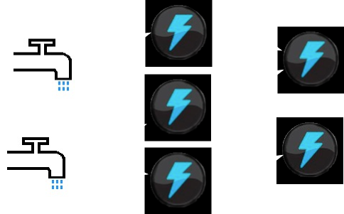

Gelfino introduction
The micro server that could
Our applications are becomming more and more
We need to track analyse and react to
Current ssh and tail doesn't
distibuted
We need to track analyse and react to
events
.Current ssh and tail doesn't
scale!


Gelfino a
micro
GELF server, users define streams
which are composed of selectors and actions taken upon selected events.
{
"version": "1.0",
"host": "www1",
"short_message": "Short message",
"full_message": "Long text.....",
"timestamp": 1291899928,
"level": 1,
"facility": "gelf-enterprise",
"file": "Foo.java",
"line": 356,
"_user_id": 42,
"_something_else": "foo"
}
(defstream stream-name "Selectors can be a string regex or fn" :message-key selector ... action)
(defstream unicorns :short_message #".*unicorn.*" (fnordic-even "seen-unicorn")) (defstream info-logs :level (fn [v] (= "INFO" v)) :facility "gelf-enterprise" (email message))
rule "unicorn seen"
when
e: String(this matches ".*unicorn.*")
from entry-point event-stream
then
System.out.println("unicorn seen");
end
(def-rulestream infos
(rule info-messages
(when message :of-type Message
(== level "INFO") :from "event-stream")
(then (println "Rule 1"))))
(defrule four-errors (when Number (> intValue 3) :from (accumulate $m :> Message (== level 4) :over (window :time 1 m) :from (entry-point event-stream) (count $m))) (then (info "4 erros happend in 1 min")))
Storm

Summary